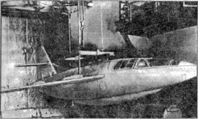
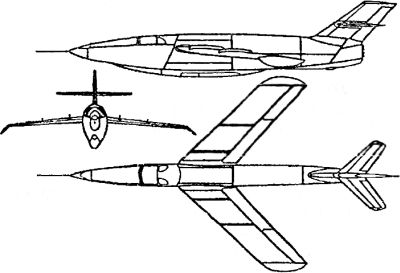

Самолет «5»
Параллельно с восстановлением в ОКБ-2 немецкого проекта «DFS-346» авиаконструктор Матус Рувимович Бисноват получил задание на создание аналогичного экспериментального ракетоплана.
В результате на свет появился проект самолета под обозначением «5». Конструкция самолета «5» — цельнометаллический моноплан со среднерасположенным стреловидным двухлонжеронным крылом с размахом 6,4 метра. На верхней поверхности установили по две аэродинамические перегородки на каждой консоли, предотвращавшие ранний срыв потока с концов крыла. Для изучения распределения давления по крылу на больших скоростях правую консоль дренировали в трех сечениях. Самолет имел фюзеляж овального сечения типа монокок, длиной 9,92 метра. Он имел разъем, позволявший расстыковывать машину для монтажа баков и для других целей. Переднюю часть фюзеляжа занимала гермокабина летчика с катапультируемым креслом. Фонарь кабины вписывался в обводы фюзеляжа. За крылом, по бортам фюзеляжа, расположили тормозные щитки.
В хвостовой части фюзеляжа установили двухкамерный ЖРД «РД-2М-ЗФ» конструкции Леонида Душкина с тягой в 2000 килограммов. Запас рабочих компонентов двигателя (керосин и азотная кислота) и перекиси водорода (для питания турбонасосного агрегата) был рассчитан на двухминутную работу ЖРД при полной тяге.
Так как изначально предполагалось, что самолет «5» будет транспортироваться на высоту самолетом-носителем, посадочные устройства сделали предельно простыми и легкими. Они состояли из подфюзеляжной посадочной лыжи, двух подкрыльных поддерживающих дуг и небольшого костыля в хвостовой части фюзеляжа.
Оперение самолета — стреловидное. Управление всеми рулями самолета жесткое. Стабилизатор управляемый, с размахом 2,4 метра. Система управления имела ряд необычных для того времени нововведений: в случае потери эффективности руля высоты в полете на больших скоростях можно было управлять самолетом при помощи стабилизатора, подключавшегося летчиком к ручке управления.
В качестве самолета-носителя использовали тяжелый бомбардировщик «Пе-8» с двигателями «АШ-82ФН». Под правой консолью его крыла, между фюзеляжем и гондолой внутреннего двигателя, установили специальный пилон, к которому подвешивался самолет «5». При испытаниях самолет «5» буксировали до высоты 7000–7500 метров.
Согласно расчетам, самолет «5» должен был достигнуть рекордной для своего времени скорости 1200 км/ч (1,13 Маха) при потолке в 12–13 километров.
Для снижения риска полеты нового самолета на начальном этапе испытаний проводили без включения ЖРД, то есть в планерном варианте, и по единому плану: пикирование, выход в горизонтальный полет с перегрузкой 2–3 g, торможение до скорости срыва, увеличение скорости и выполнение заданных эволюции: на высоте 1500–2000 метров выполнение задания прекращалось. На этапе посадки самолета изучались особенности устойчивости, управляемости и пилотажные качества на сравнительно небольших скоростях.
В ходе проектирования самолета «5» были построены крупномасштабные модели, снабженные двигателем и автопилотом. Предварительную отработку автопилота на одной из моделей провели в аэродинамической трубе ЦАГИ Т-104. Запуски моделей позволили получить большое количество полезной информации еще до того, как самолет «5» вышел на летные испытания. В частности, было определено аэродинамическое сопротивление планера до скорости, соответствующей М = 1,45.

Летные испытания последовательно прошли два самолета «5» под обозначением «5–1» и «5–2». Ведущим по испытаниям назначили летчика Пахомова.
Первый полет самолета «5–1» состоялся 14 июля 1948 года При отделении от самолета-носителя он зацепил за упор фермы подвески на «Пе-8» и повредил обшивку консоли крыла, частично заклинило продольное управление. Но летчику все же удалось совершить посадку, хотя и не на взлетно-посадочную полосу аэродрома. Самолет «5–1», получив значительные повреждения, был отправлен на завод дня ремонта.
В процессе восстановления «5–1» претерпел некоторые изменения. Для предотвращения возможного удара самолета о «Пе-8» был изменен угол крепления «пятерки» относительно оси самолета-носителя (с 0 до -4°). Доработали и систему управления, которая впоследствии действовала безотказно. В таком виде «5–1» совершил еще два полета. Масса самолета «5–1» в ходе испытаний в планерном варианте достигала 1565 килограммов.
Анализ результатов предварительных летных испытаний, а также продувки самолета в натурной аэродинамической трубе ЦАГИ Т-101 показал, что самолет «5–1» обладает неблагоприятным соотношением между поперечной и путевой устойчивостями. Это отчасти послужило причиной аварии «5–1» в третьем полете, состоявшемся 5 сентября 1948 года. Самолет подошел к взлетно-посадочной полосе с креном, вначале коснулся земли одной консолью крыла, затем ударился другой и в конце пробега резко клюнул носом. Летчик остался цел, но самолет был разбит и восстановлению не подлежал.
Произошедшая авария задержала испытания. Они продолжились только в январе 1949 года, когда был выпущен самолет «5–2». Конструктивно он почти не отличался от «5–1», но на нем выполнили ряд доработок. В частности, для улучшения путевой устойчивости увеличили удлинение и стреловидность вертикального оперения, что повлекло увеличение длины самолета до 11,2 метра; подкрыльные дуги заменили специальными амортизирующими костылями, поглощавшими энергию удара в момент касания земли.
Полеты на самолете «5–2» выполнял летчик-испытатель Георгий Шиянов. Первый полет новой машины состоялся 26 января 1949 года, но из-за посадки за пределами взлетно-посадочной полосы закончился аварией. «5–2» был поврежден и нуждался в ремонте. Главная причина неточных приземлений самолетов «5–1» и «5–2» заключалась в трудности построения расчета на посадку, особенно в первом полете, из-за весьма небольшой тогда посадочной полосы Летно-исследовательского института.
В ходе ремонта самолета «5–2» шло его дальнейшее усовершенствование. Посадочную лыжу установили параллельно строительной горизонтали фюзеляжа, это сделало пробег самолета более устойчивым и позволило отказаться от хвостового костыля, а позже на его месте расположить подфюзеляжный киль для увеличения путевой устойчивости.
После ремонта самолета «5–2» испытатель Шиянов выполнил на нем второй полет, закончившийся благополучно. Анализ результатов первого и второго полетов показал, что нужное соотношение между поперечной и путевой устойчивостями все еще не достигнуто. Чтобы улучшить его, конструкторы нашли оригинальное решение: установили на консолях так называемые «ласты».

После всех доработок самолета Шиянов совершил на «5–2» еще шесть полетов, последний из которых состоялся в июне 1949 года. Масса самолета составляла 1710 килограммов, а наибольшая скорость, достигнутая в пикировании на высоте 5400 метров, соответствовала 0,775 Маха. Самолет обладал удовлетворительными пилотажными качествами. Управление с помощью необратимых гидроусилителей (бустеров) практически не отличалось от обычного. Все системы были отлажены и самолет подготовлен для полетов с ЖРД, но было принято решение о прекращении дальнейших работ. К этому времени опытные самолеты с турбореактивными двигателями уже вышли на рубеж скорости 1200 км/ч и необходимость в продолжении испытаний ракетоплана исчезла.
В ходе испытаний самолета «5» и его модификаций впервые в СССР были исследованы особенности отделения летательных аппаратов со стреловидным крылом от самолетов-носителей, а при доводках накоплен практический опыт, использованный при создании новых скоростных самолетов. На базе самолета «5» Бисноват и Исаев создали крылатую ракету «воздух-поверхность» «Р-1».
Судьба самолета «5» весьма типична для конца 40-х годов космического века. Ракетопланы уверенно вытеснялись турбореактивными машинами Микояна, Лавочкина, Яковлева и Сухого. Эти новые самолеты оказались более экономичны и надежны в эксплуатации, ВВС с удовольствием принимали их на вооружение. История «космической» авиации закончилась, не успев начаться. По крайней мере, именно так могло показаться со стороны…